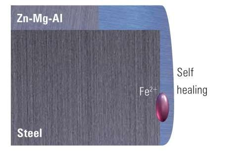
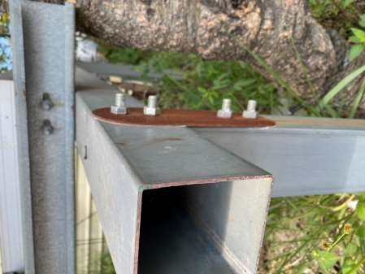

關於我們
先懂鋼，
先懂鋼，
再做支架
創炘工業源自深耕多年的鋼鐵公司，專心做好一件事：讓太陽能板在屋頂上站得穩、撐得久。
我們的來歷
精工設計，從材料開始
多年鋼鐵本業的經驗，讓我們清楚每一種板材的強度、鍍層與加工特性，也知道結構在颱風、鹽害與長年日曬下會怎麼變化。
我們把這份經驗帶進太陽能支架：選用耐蝕的鎂鋁鋅鋼板，從斷面、孔位到每一顆螺絲重新設計，讓結構精簡、受力合理、現場好組裝。這就是我們說的「精工設計」。
原料自行進口、去除中間環節，客戶拿到的是穩定的品質與實在的價格。從諮詢、丈量、繪圖到專車出貨，由同一個團隊負責到底。


我們的堅持
每一支支架背後的三個原則
材料
材料不妥協
採用 SuperDyma® 與浦項 PosMAC® 鎂鋁鋅鋼板，搭配 ISO 8.8 級耐酸螺絲，板材與緊固件都經過試驗。
結構
用數據證明
風洞、拉拔、抗彎、鹽霧試驗都有報告，用數據回答「撐不撐得住」。
施工
為施工團隊設計
每種浪板有專屬底座，零件精簡、孔位精準，減少團隊在屋頂上的時間。
材質
鎂鋁鋅：切口會自我修復的鋼板
支架裁切後，切口初期可能出現紅鏽。鍍層中的鎂與鋅會逐漸形成穩定保護膜（Simonkolleite，Zn₅(OH)₈Cl₂·H₂O），把切面包覆起來，達到持續防鏽。
SuperDyma®POSCO PosMAC®ISO 8.8 螺絲


想看完整試驗報告？
跟我們索取產品型錄與檢驗報告。